Avasta Tartut!
Siit leiad koos lühikirjeldusega tudengile sobilikke kohti Tartus, mida külastada, ning kus sõpradega aega veeta.
Ilusad paigad jalutuskäiguks
-
Toomemägi

Imeilus park Tartu linna südames, kus saab nautida sügiseseid värve, imelisi vaateid linnale ja jalutada mööda Toomkiriku varemeid.
-
Emajõe kallas

Ideaalne koht jalutuskäiguks, kus saab nautida jõeäärset loodust, sõpradega istuda ja jutustada ning külastada sealseid baare ja restorane.
-
Supilinn

Hubane ja väga omanäoline linnaosa, kus saab uudistada värvilisi puidust majakesi. Vahetusläheduses on ka Emajõgi ning palju sportimisvõimalusi.
-
Tähtvere
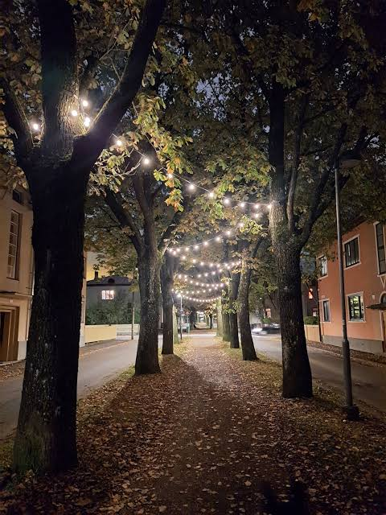
Rahulik linnaosa Tartus, kus saab jalutada mööda valgustatud alleed ning avastada huvitava arhitektuuriga maju kaarjas tänavatel.
-
Karlova
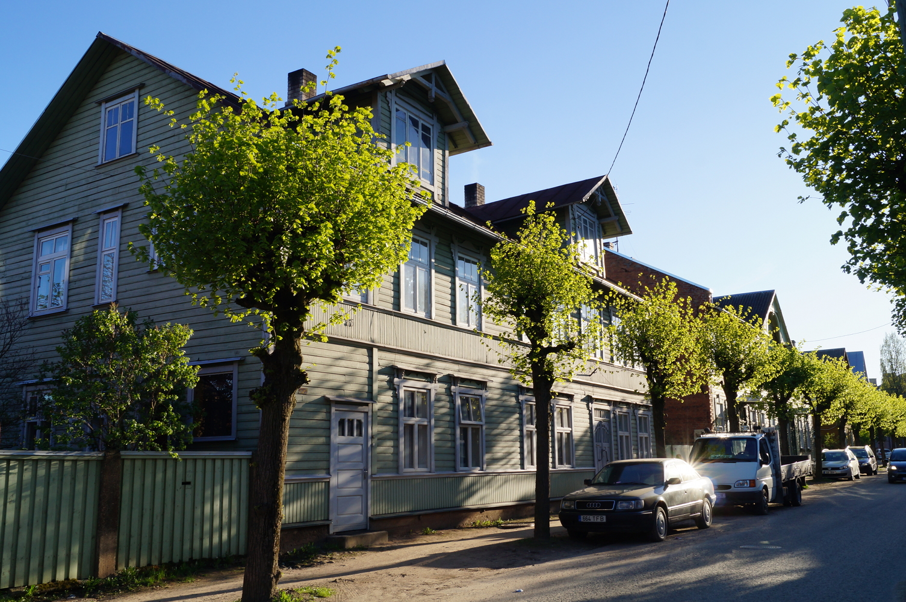
Karlova on välimuselt mitmekülgne linnaosa, kus on nii vanu puumaju kui ka modernsemaid ehitisi. Seal on mitmeid mõnusaid kohvikuid ja kohalikke poekesi.
-
Tartu Ülikooli botaanikaaed

Botaanikaaed on ideaalseim koht Tartus looduse nautimiseks. Seal on võimalik jalutada taimede vahel mööda erinevaid teid ning uudistada tiigis elavaid kalu. Lisaks on seal kasvuhooned, kus on võimalik näha eksootilisi taimi.
Kuhu õhtul minna
-
Möku
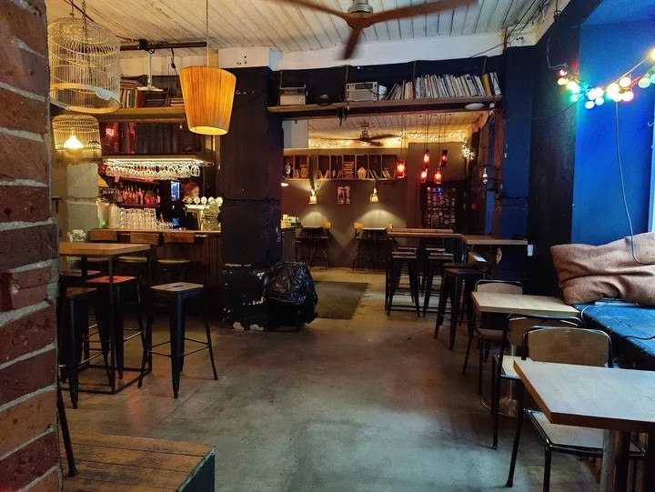
Tartu tudengite seas populaarseim baar, kus korraldatakse lisaks tavapärasele külastamisele ka erinevaid üritusi, näiteks toimuvad kolmapäeviti bingoõhtud.
-
Kivi
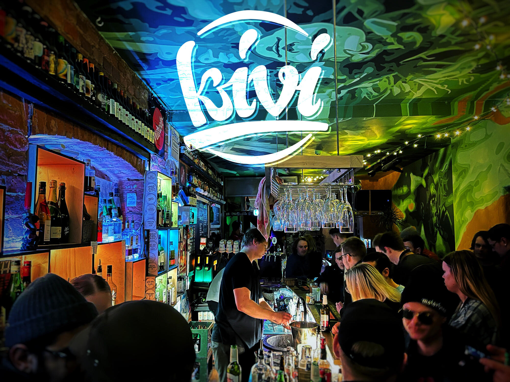
Väike baar koos hooviga Tartu südames, mis on oma nime saanud ukse ees olevate kivide järgi.
-
Seik

Väike baar-klubi, kus on võimalik nautida head muusikat ja populaarseid hitte. Tegu on väikese, kuid väga suure külastusega baariga.
-
Pirogovi park
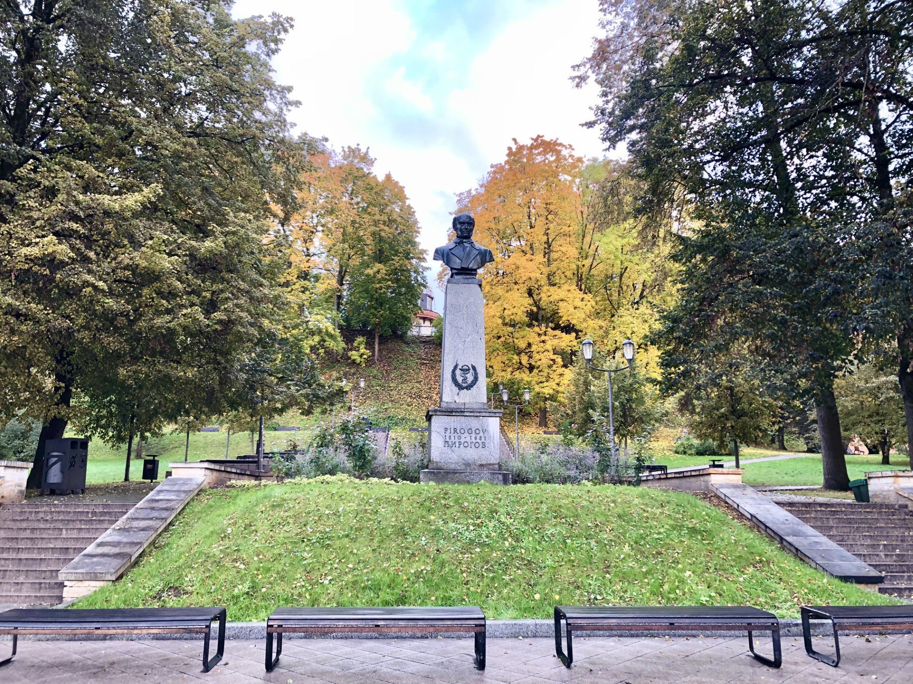
Park Tartu kesklinnas raekoja vastas, mis on populaarsust kogunud just tudengite seas. Seal on võimalik veeta kursusekaaslastega koos aega ning tihtipeale toimuvad seal ka tudengitele mõeldud üritused.
-
Genialistide klubi
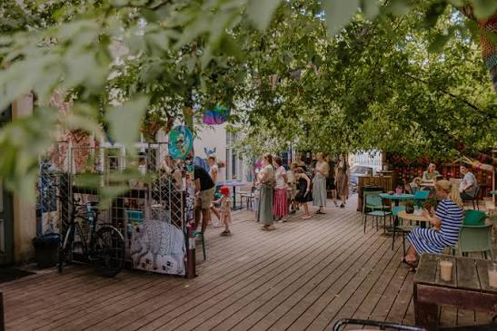
Omanäoline klubi, kus on võimalik nautida ilusat atmosfääri ja head muusikat koos oma sõpradega.
-
Ula baar

Armas väike baar rahulikus piirkonnas Toomemäe kõrval, kus on suur õu ning hea võimalus aja mahavõtmiseks.
Aja maha võtmiseks
-
Werner

Tartu südalinnas paiknev kohvik läbi kahe korruse ja väikese hoovialaga, kus on ka suur valik erinevaid küpsetisi. Mõnus koht õppimiseks.
-
Kohvipaus
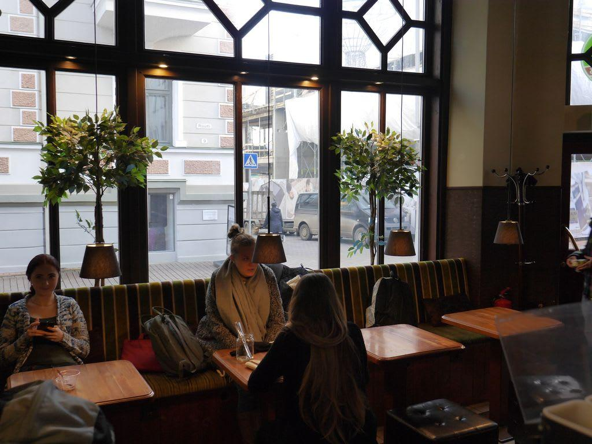
Väike nurgapealne kohvik südalinnas, kus on võimalik nautida head kohvi ja küpsetisi.
-
Karlova Kohv
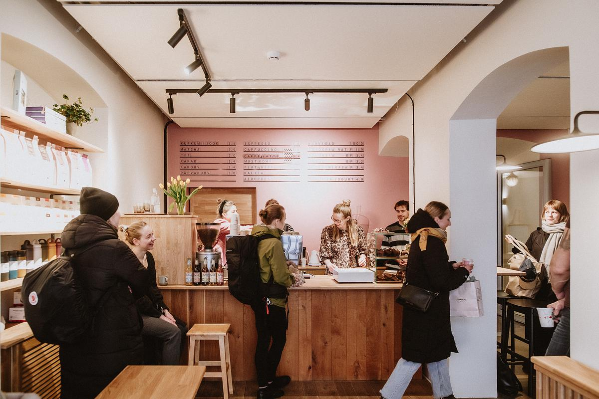
Armastatud kohvik nii Karlovas kui ka Raekoja platsil, kus nautida maitsvat kohvi.
-
Cruffin

Ilusa väljapaneku ja maitsvate küpsetistega kohvik, mis asub nii Raekoja platsil kui ka Aparaaditehases.
-
Gustav Cafe

Läbi kahe korruse paiknev kohvik Tartu kesklinnas, mis pakub külastajale palju avarust ja head toitu. Lisaks on seal hea võimalus õppida.
-
Reval Cafe
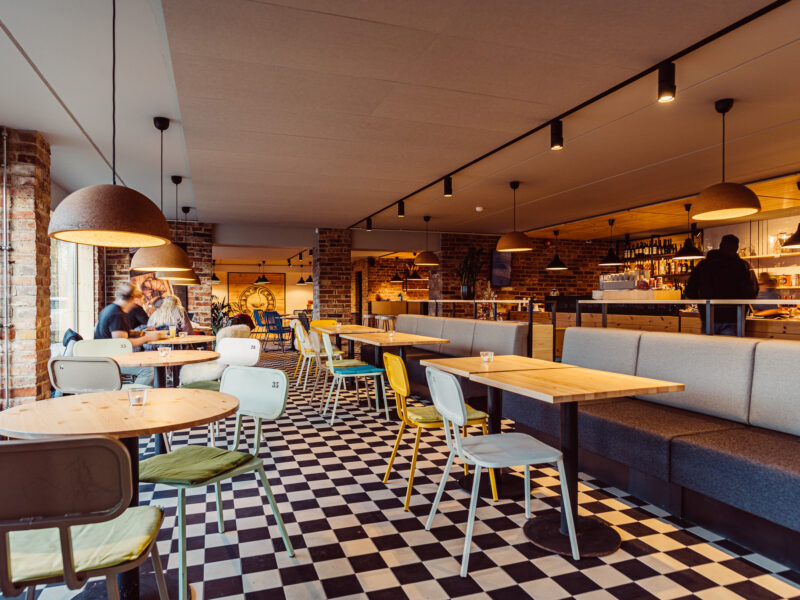
Avar ja huvitava interjööriga kohvik Tartu kesklinnas koos maitsvate söökidega. Sobib imeliselt ka õppimiseks.
-
Mandel

Tartu kesklinnast veidi eemal paiknev hubane kohvik maitsvate küpsetistega. Kohviku ukseesine on vastavalt aastaajale imeliselt kaunistatud. Suvel on võimalik külastada ka kohviku lillelist salaaeda.
Muu
-
Aparaaditehas
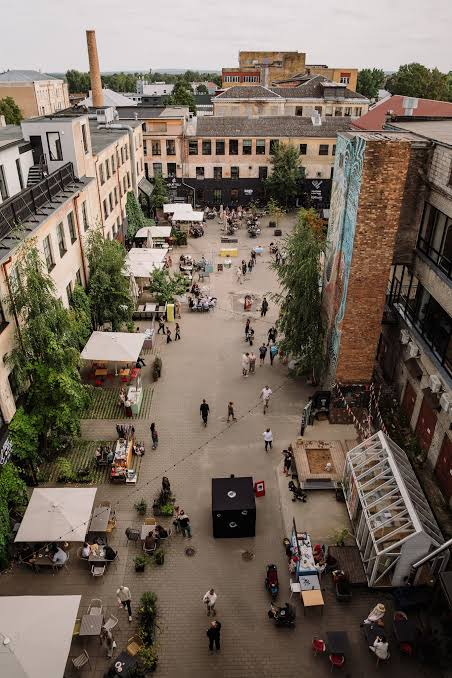
Aparaaditehas on Tartu kesklinna kandis omanäolise atmosfääriga paiknev kultuurikeskus, mille hoovis kui ka siseruumides toimuvad erinevad üritused. Lisaks on seal mitmeid hinnatuid restorane ja kohvikuid.
-
Elektriteater
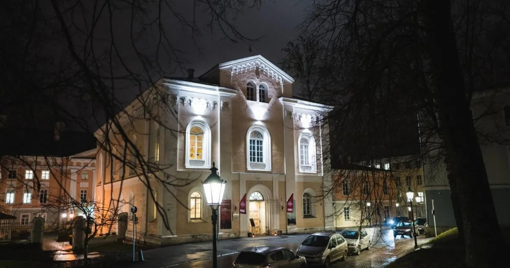
Elektriteater on Tartu Ülikooli peahoone kõrval paiknev väike vanamoodsa arhitektuuriga väärtfilmikino.
-
Eesti Rahva Muuseum
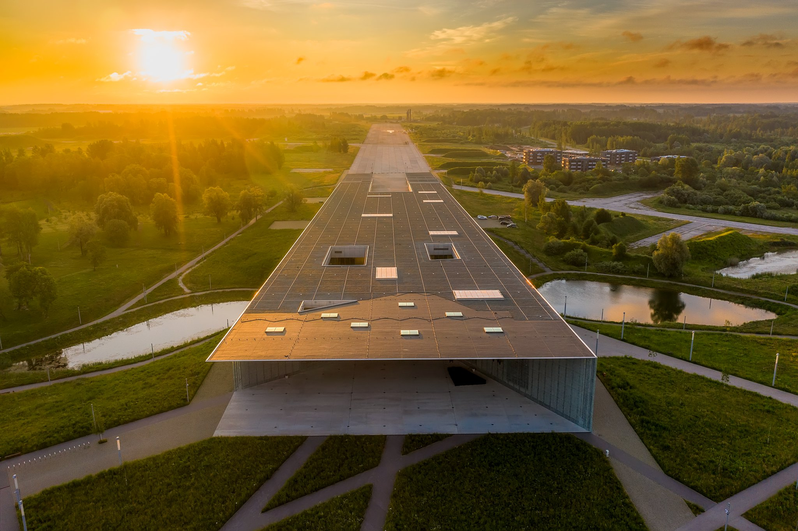
ERM on Tartu linna ääres paiknev modernne muuseum, kus on võimalik tutvuda Eesti kultuuri ja ajaloo ning erinevate näitustega.
-
Tartu Ülikooli raamatukogu
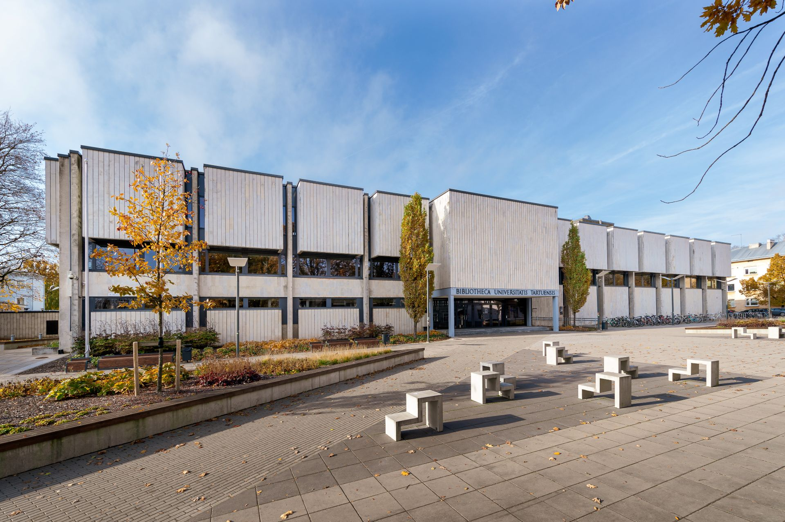
Tartu Ülikooli raamatukogu on Tartu kesklinnas paiknev suur hoone, mis on ideaalne koht õppimiseks, ning on eriti populaarne just tudengite seas.
-
Delta hoone
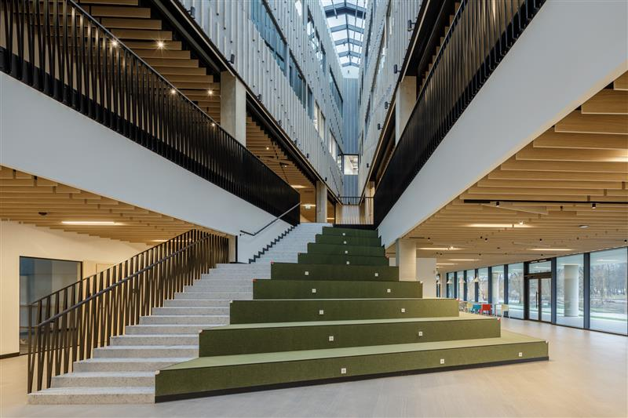
Tartu Ülikooli Delta hoone on Emajõe ääres paiknev õppehoone, mis on ilus hubane koht õppimiseks.
Taaskasutuskeskused
-
Humana
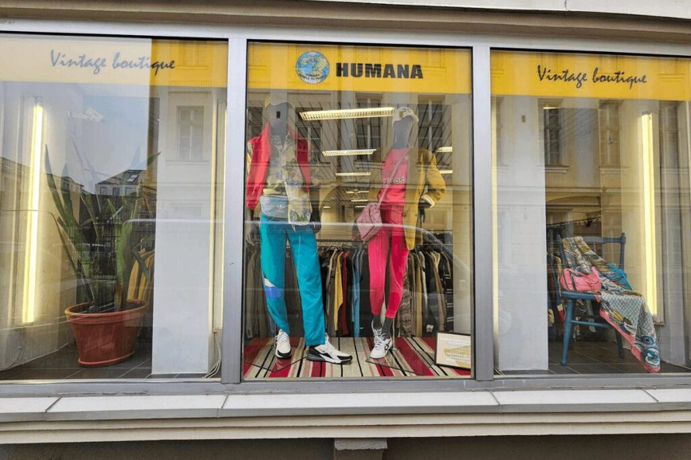
Taaskasutskeskus, kust on võimalik saada erinevaid huvitavaid esemeid heade hindade eest. Tartus on tavaline Humana Vaksali piirkonnas ja Vintage Humana kesklinnas.
-
Sarapuu kirbukas
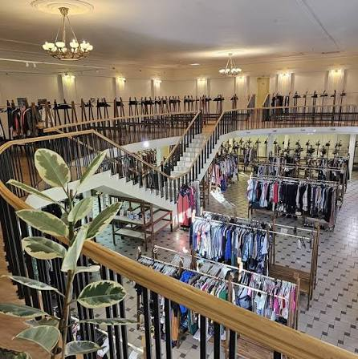
Suur taaskasutuskeskus läbi mitme korruse, kus on suur valik nii kasutatud kui ka uusi esemeid.
-
Sõbralt sõbrale
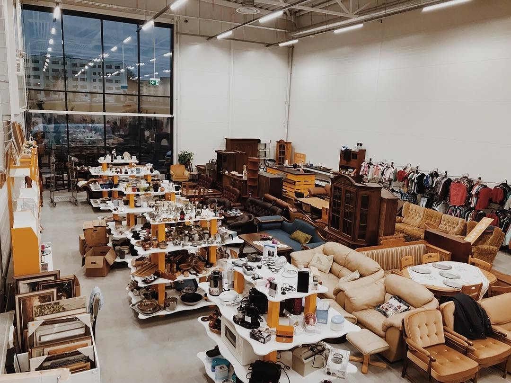
Taaskasutuskeskus Karlova ääres ja Annelinnas, kust on võimalik leida hea hinnaga huvitavaid esemeid ja mööblit.
-
Uuskasutuskeskus
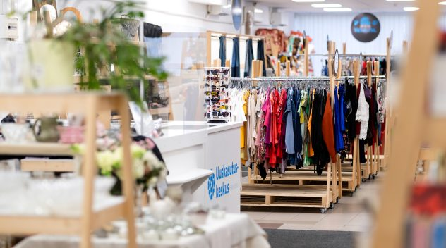
Taaskasutuskeskus Tartu kesklinnas ja Annelinnas, kust saab leida hästi hoitud teise ringi esemeid.